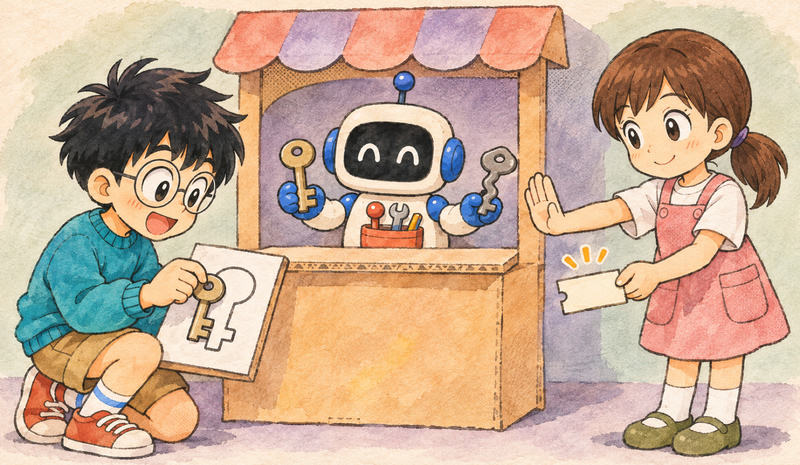

Feature 07 · ARTICLE · 2026 11
Formally verifying agent-written full-stack web apps with PDD Kit
Coding agents now ship whole features at once, and exhaustive line-by-line review can become difficult to scale. The plan is supposed to be the contract between you and the agent, but nothing forces the agent to follow it, and the tests it writes usually check what it built rather than what you asked for. PDD Kit works with you to turn your intent into a formal specification in Verus, proves the agent’s Rust code meets that spec for every input, and falls back to tests where a proof can’t reach. We used it on the login logic of Pet Store, a full-stack Rust web app. Verus hardened the code and uncovered existing bugs, and the developer reviewed the intent without reading the generated code line by line. PDD Kit is a research prototype, it verifies only Rust, and its guarantees are only as strong as the pieces it takes on trust.

Why proofs, and why now
Agents drift from the plan. They implement something slightly different, then write tests that pass for their own implementation. Coverage looks healthy, and the gap stays hidden until a bug report arrives. Tests can’t close that gap, because they exercise only a tiny slice of what a program can do.
Review asks “does this look right?” A proof answers “is this right?”
Proofs used to need specialists, unfamiliar languages, proofs many times larger than the code, and years of work. Two things have changed: coding agents have made it increasingly practical to generate formal proofs from well-defined specs, and agents can now better help you write those specs. We call this Proof-Driven Development (PDD).
How PDD Kit works
![Flow diagram showing the PDD Kit workflow for formally verifying agent-written code. Team members review intent by expressing requirements in plain language, which are formalized in a pdd-plan containing decision cards, intent artifacts, trusted boundaries, and reviewer approvals. The plan generates a formal specification with Verus ensures clauses. Machines then check the code through pdd-prove, which includes Verus proofs, tests for trusted components, and LLM gap review. Verified code and receipts are submitted as a pull request. Dashed feedback loops return specification contradictions and verification gaps to earlier planning and coding stages.](../../img/a7d489131315bc53-1429.jpg)
PDD Kit runs inside Chopin, GitHub Next’s multiplayer planning environment. Team members review intent in plain language. PDD Kit asks the questions a careful reviewer would ask and records the answers in an intent artifact. What can be formalized becomes a Verus spec; what must be taken on trust becomes an informal spec for tests. You don’t need a formal methods background.
Every result says what it rests on. Formal verification is a proof for every input. Empirical verification runs the code and observes it, and PDD Kit labels a passing test as evidence rather than proof. The line between them is the Trusted Computing Base, and you sign off on each piece of it.
Pet Store login

Pet Store is about 5,000 lines of Rust: an Axum and SQLite backend and a Leptos storefront compiled to WebAssembly. The developer’s whole request was two sentences:
You only get a token with the right password.
Only admin accounts get admin tokens.
We kept it rough on purpose.
Before writing anything, PDD Kit came back with questions. The first: a login that refuses everyone keeps “only with the right password” perfectly. Ruling that out needs the converse, that the right password always works. Together they make an “if and only if.” An agent left alone would pick one without telling you; here the developer picked both.
PDD Kit’s first draft proved the decision at the center of login and kept the handler around it trusted and tested. The developer wanted more, since that glue is where a refactor can quietly swap two lines, and gave the handler its own async spec. The card said beforehand that proving more meant trusting more small wrappers.
Where proof stops
Login runs into most of what can’t be proved: code the verifier can’t see (bcrypt, sqlx, jsonwebtoken), facts about the outside world (what SQLite holds, what the clock says), whether and how fast something finishes, anything a person has to judge, and whatever nobody wrote down.
PDD Kit wraps each trusted piece in a small function with an assumed contract, asks the developer to accept each one, and plans a test for every assumed clause. For login, the developer signed off on six: the two database lookups, check_password, generate_token, expiry_from_now, database_error, and the handler shell. Here’s check_password:
/// Asks bcrypt whether `password` matches the stored `hash`.
/// Trusted, not proved: Verus cannot check bcrypt's hashing,
/// so this wrapper's contract is assumed.
/// Every password promise of `login_flow` rests on it.
#[verifier::external_body]
pub fn check_password(password: &str, hash: &str) -> (r: Result<bool, String>)
ensures
// bcrypt answers (Ok) exactly when it can read the stored hash.
r is Ok <==> bcrypt_verdict(password@, hash@) is Some,
// Its answer is its verdict: true for the
// right password, false for any other.
r matches Ok(b) ==> bcrypt_verdict(password@, hash@) == Some(b),
{
bcrypt::verify(password, hash).map_err(|e| e.to_string())
}
Reading the spec
Nobody has to read the proof: the coding agent writes it and Verus checks every step. People review the spec. Each function gets an ensures block, statements about its result that must hold for every input; if any clause could fail for even one input, the build fails.
The two-sentence request ended up as eight ensures clauses on login_flow. Four keep today’s refusals, so the storefront and existing API tests keep working. The clause for the first requirement names the same account on every line, which ties the password check to the token. If Bob logs in with his own correct password and gets a token for Alice’s account, that clause catches it. That’s the kind of wiring bug a test suite rarely thinks to look for.
The spec talks about SQLite, bcrypt and JWTs through uninterpreted functions, names with no body that Verus knows only through the trusted contracts. Because login_flow is async, its ensures clauses describe the value you get when you await it; nothing promises the future finishes.
Prove, check, ship
Signing off on the spec is where the developer’s review ends. pdd-prove turns the plan into seven tasks. In each, a coding agent writes the code and proof, Verus checks them, the trusted boundary gets its tests, and an LLM verifier looks for requirements with no proof and no passing check. Gaps go back to the agent; contradictions in the spec go back to the developer.
A model writing its own spec tends to land on clauses that verify but rule out almost nothing. We call that “vibe verification.” To guard against it, pdd-prove plants one bug per ensures clause in a scratch copy, and Verus has to reject each mutant. The loop also won’t move the goalposts: if an async construct can’t be expressed in the pinned Verus, the task stops and asks rather than weakening a contract.
The pull requests route the real login handler through login_flow, keeping the existing status codes. pdd-ship adds the Verus check to CI, so every later change has to keep proving against the same spec, and prunes tests that only re-check what’s proved. The check is deterministic, with no model involved, and takes seconds for a small module, up to minutes for a larger codebase.
What we’re claiming
Proved.
login_flow,login_core,lookup_target,decide_loginandissue_tokenmeet their contracts for every input.Trusted and tested. The lookups,
check_password, the clock, token signing, the database error message and the handler’s request unpacking, each behind a contract the developer accepted.Assumed. The Verus, Rust compiler and Z3 toolchain, and vstd.
Two trusted pieces carry most of the weight: check_password for every password promise, and the lookups for every promise about which account a token names. Tests support them, but nothing proves them. A wrong spec is also still possible, which is why PDD Kit keeps developers reviewing and approving it. Proofs still take real effort. We expect the trusted boundary to shrink significantly over time, and we want to find out how far this scales. We’d start where a bug costs the most, such as login, payments, or permissions, and verify the rest one piece at a time.
Instead of relying mainly on line-by-line review of agent-generated code, a team reviews what it meant, in plain language, and a proof holds the code to it.